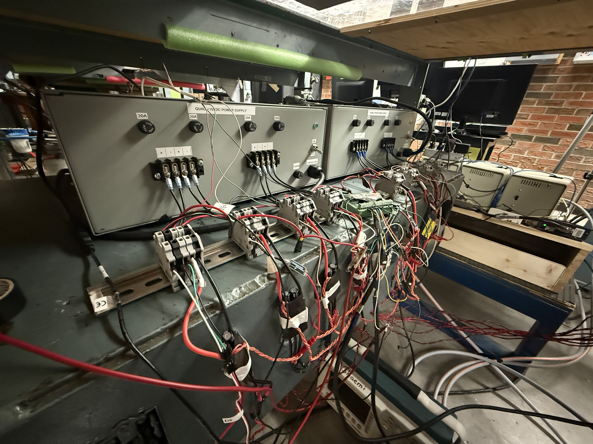
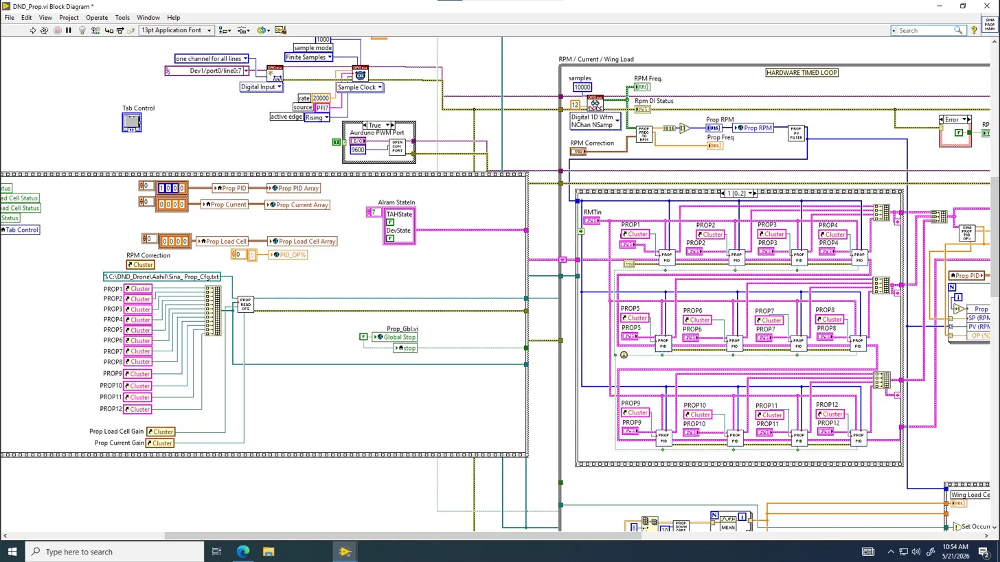
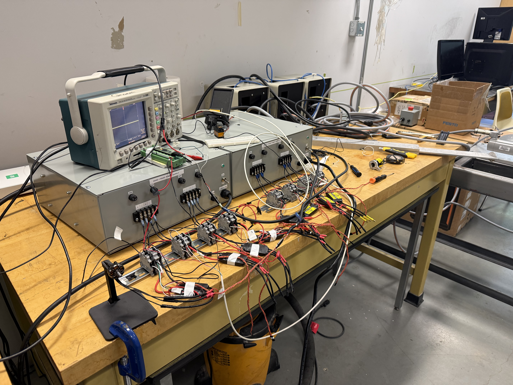

LabVIEW Motor Control
Extended an inherited LabVIEW/DAQ system to control 12 propeller motors and two canard surfaces, with a high-rate raw logging pipeline for RPM measurement alongside it.
Gallery





Problem
- The wind tunnel test bench could control and log 8 propeller motors, but the project needed more: additional motors, brand-new control for two canard surfaces, RPM logging far faster than the existing method allowed, and firmware operators could reconfigure without reflashing
- The catch: the LabVIEW code was inherited, undocumented, and never written to be extended, and I was modifying it while learning LabVIEW from zero
- Everything had to stay usable by non-programmer operators during live tests, running on NI DAQ hardware and a Teensy
Proposed Solution
- Extend the existing system rather than rewrite it, keeping each new piece self-contained so working parts didn't break
- Add a simple no-PID loop for the canards (a servo self-corrects mechanically, so LabVIEW just commands a position and reads the actual angle back)
- Leave the existing slow-but-wanted FFT RPM measurement alone and add a separate high-rate raw logger beside it, with analysis done offline in MATLAB
- Turn the Teensy into a "dumb" pass-through so all scaling and tuning logic lives in LabVIEW where operators can change it live
Design Process
- Learned the codebase using LabVIEW's live debugging tools (context help to see what each wire carries, probes to watch values mid-run, execution highlighting to literally watch data flow) since I couldn't change it safely without understanding how data actually moved
- Extended propeller control from 8 to 12 motors, which was harder than a number change because the original wasn't array-based: each motor was a hand-placed copy of the PID block. Traced the "motors 9-12 show up empty" bug through several hidden layers, the key one being that a LabVIEW for-loop silently runs only as many times as its shortest input array, so a filter sub-VI that still had only 8 nodes inside was quietly capping the whole thing at 8
- Fixed a second silent bug where the motor data left the case structure through two separate wire tunnels (one for 1-8, a disconnected one for 9-12), so the new motors' data never reached the shared array. Merged them into one continuous chain
- Built the canard subsystem: read two precision potentiometers as voltage dividers on the DAQ's spare analog inputs, added as a separate small task so the working current/load-cell tasks stayed untouched, with a linear voltage-to-degrees conversion and a one-time calibration at the physical limits
- Made the canard command path operator-friendly per the leads' request: a degrees input on the front panel converts to microseconds in LabVIEW, with all scaling constants (including a calibratable zero offset) adjustable live during a test, so operators re-tune without touching code
- Reverse-engineered the existing RPM math and understood why the FFT approach fundamentally can't log fast: an FFT trades time resolution against frequency resolution, so a clean RPM number needs a long window. Since the leads wanted the FFT kept, the answer wasn't to replace it
- Solved the "fast data without breaking the slow measurement" problem by leaving the 2Hz FFT untouched and adding a separate raw capture that dumps the DAQ waveform at its full 20kHz to a binary file. Chose binary over CSV deliberately: reasoned out that writing spreadsheet rows inside the acquisition loop blocks the DAQ and drops the overwhelming majority of samples, while a binary file is a raw memory dump that keeps up
- Wrote the MATLAB post-processor to read the binary back and recover RPM from the raw pulse edges (find rising edges, average the period, convert). Caught a false-40kHz sample rate that was actually an interleaving artifact of two channels sharing one task, and validated the whole pipeline end to end against the live readout
- Restructured the Teensy firmware as a pass-through with an emergency stop, and fixed a servo-not-outputting bug traced to the Servo library's hidden 12-servo default limit (12 motors + 2 canards = 14 exceeded it, so the last two silently failed to attach)
Final Product
- Propeller PID control extended from 8 to 12 motors, wired all the way through the control chain, global data arrays, config, front panel, and serial transmit string, and currently deployed in the large wind tunnel
- A canard subsystem commanding both surfaces in degrees, converting live in LabVIEW, reading actual angle back from potentiometers, and logging commanded vs measured, with every scaling constant operator-adjustable and no reflashing needed
- High-rate 20kHz raw binary logging running alongside the untouched FFT measurement, plus a MATLAB pipeline that recovers RPM from raw pulse edges offline, used to complete all the propeller frequency sweeps for the small wind tunnel
- Pass-through firmware on two Teensy boards with an emergency stop, servo-limit and pin issues understood and handled